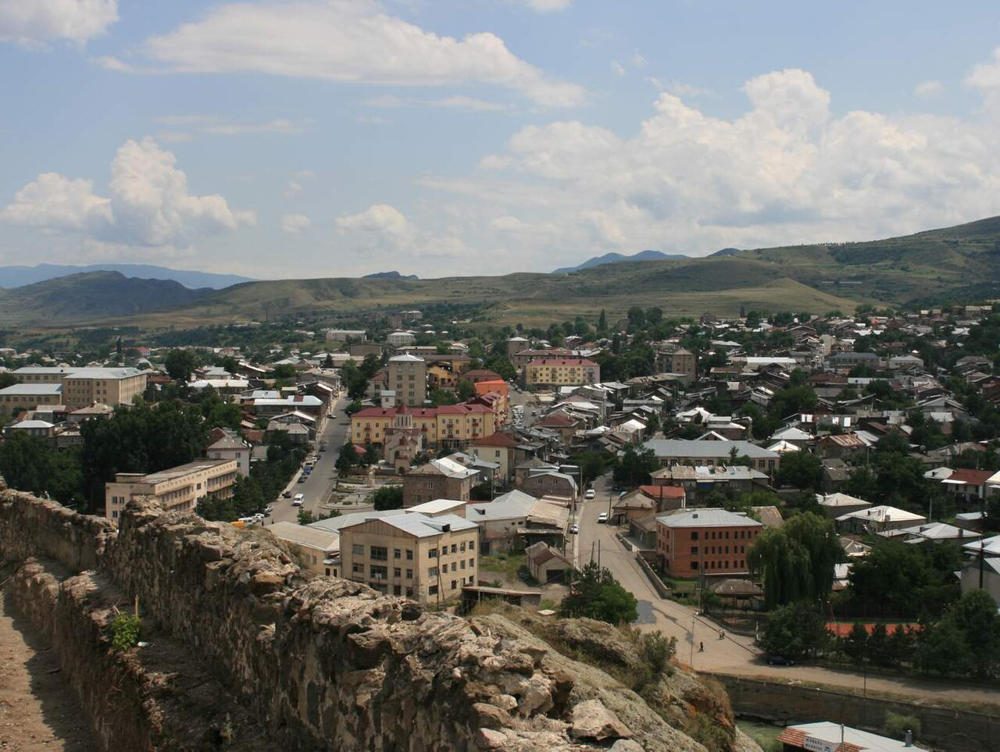

В четыре руки

Проходите, только руки сначала помойте, вон умывальник. Мне сказали, вы писатель. А руки у писателя для работы годятся? Ничего, сейчас проверим. Тесто я поставил с утра, оно уже отдохнуло, жир растоплен. Садитесь пока, я расскажу, а потом позову.
Это чалма. Так у нас в Месхети называют хачапури, который сворачивают тюрбаном, как чалму на голове. Его считают самым трудным из всех хачапури, и правильно считают. Тесто для него тянут на столе руками, пока сквозь него не станет видна клеёнка, и тянут вдвоём, с двух концов, иначе порвёшь. Хорошая хозяйка справится и одна, я таких видел. Только это как одному пилить двуручной пилой: можно, а зачем?
Ещё надо вам объяснить, кто мы такие, а то вы удивитесь, когда я скажу «костёл». Мы в Арали католики. Грузины, такие же, как все в Месхети, только католики, и не со вчерашнего дня, а уже несколько веков. Наши сёла здесь кругом: Уде, Вале, Схвилиси, Арали. Православные соседи звали нас франгами. Первые наши священники были французы да итальянцы, а у грузин всякий европеец был франг. Обидного в этом ничего нет, бабушка сама так говорила: мы франги, у нас и Пасха своя.
С Пасхи всё и начинается. Католики считают Пасху по одному календарю, православные по другому, и чаще всего наша выходит раньше, на неделю, а то и на пять. А у вас в России Пасха когда, вместе с грузинской? Ну, значит, вы по их календарю. Ничего, за этот стол всех сажают.
Я родился после войны и костёла открытым не помню. Его закрыли ещё до меня, священника увезли, на двери висел замок. Молились в старой часовне на краю села, за огородами. Её построили задолго до всех нас, крыша у неё давно провалилась, и наши старики перекрыли её сами, никого не спрашивая. Там собирались по воскресеньям, тихо, без колокола. Мессы не было, служить было некому, читали молитвы сами, кто какие помнил. Старики потом говорили, что село у нас ни одного года не оставалось без молитвы. Я в детстве этого не понимал, мне казалось, что часовня просто наш секрет, вроде шалаша.
Про Уде тоже скажу, раз зашла речь, а то вы туда поедете и удивитесь. Наши построили там большой костёл в начале века, а при советской власти в нём устроили склад, потом музей. В девяносто втором его передали православной церкви, и теперь там служат по-своему. Я так думаю: пусть лучше служат по-своему, чем там опять стоял бы склад. Бог разберётся, кто к нему с какой стороны пришёл.
Теперь про бабушку. Звали её Нуца. Дед погиб на войне, отец с матерью работали в Ахалцихе, а я рос у бабушки, потому что в селе было сытнее. Через забор от нас жила тётя Вардо, вдова. Она была православная, родом из Имерети, вышла замуж в наше село ещё до войны, и муж её тоже не вернулся. Две вдовы через забор. Ругались они, как сёстры, из-за всего на свете: из-за курицы, из-за воды, из-за того, чья тыква залезла на чужую сторону. А чалму пекли вместе.
Уговор у них держался лет двадцать, наверное, с тех пор, как обе остались одни. На нашу Пасху тётя Вардо приходила к бабушке и держала ей тесто с другого конца стола. А через неделю или через месяц, на их Пасху, бабушка шла к ней и держала ей. В селе над этим посмеивались: франги с православными одно тесто поделили. Бабушка отвечала, что тесто они не делили, а тянули, и это разные вещи.
Сейчас покажу, как это. Шар теста сначала раскатывают ухлави. Это у нас такая скалка, длинная тонкая палка, вон она висит. Потом лист кладут на стол, двое берут его с двух сторон, подсовывают под край кулаки и тянут каждый на себя, понемногу, переходят вдоль стола и тянут опять. Тесто растёт и становится как платок. Если один тянет сильнее, оно рвётся. Если один зазевался, тоже рвётся. Поэтому тянуть надо с человеком, которого знаешь, как свою руку. Бабушка говорила, что с Вардо они ругаются языком, а руки у них давно помирились.
Потом лист мажут жиром. Бабушка брала нахичо, это наш месхетинский жир: свиное сало моют в холодной воде, сушат и топят на маленьком огне, пену снимают, а жир процеживают. Шкварки, что остаются, солят и едят с хлебом, их мне давали за работу. Жиру дают впитаться, лист складывают, опять мажут, опять дают постоять. Потом сворачивают жгутом, жгут закручивают улиткой, и получается та самая чалма. Внутрь кладут сыр, свежий пополам с тенили. Тенили — наш месхетинский сыр, его вытягивают в тонкие нитки и набивают в глиняный горшок, больше его нигде так не делают. Сверху защипывают, ладонями расплющивают от середины к краю, мажут желтком со сметаной и ставят в печь.
А в шестьдесят третьем году Пасха пришлась на один день. Так бывает раз в несколько лет, но я тогда этого не знал, и бабушка, по-моему, тоже не ждала. Обе узнали в одно воскресенье: бабушке сказали в часовне, тёте Вардо — родня из Ахалцихе. Четырнадцатое апреля. Обеим печь в одну ночь, обеим нужен стол и чужие руки, а на две чалмы в одну ночь рук не хватает, потому что каждая хочет, чтобы держали ей.
Мне было лет десять. Целую неделю я бегал между дворами, как почтальон. Бабушка говорила: «Скажи Вардо, что у меня стол длиннее, пусть она приходит ко мне». Я бежал и говорил. Тётя Вардо отвечала: «Скажи Нуце, что у меня печь новая и жар ровнее, пусть она приходит ко мне». Я бежал обратно. Сами они через забор не разговаривали, хотя забор был им по пояс. На третий день бабушка велела передать, что Вардо всегда растягивала левый край тоньше правого. Это была страшная обида, и я её не передал, сказал, что бабушка кашляет. Мне до сих пор стыдно, но, по-моему, тогда я спас Пасху.
Была и другая забота. При Хрущёве опять взялись за веру: в газетах писали про попов, в школе нам объясняли, что Пасха — пережиток. Председателем у нас был Резо, человек неплохой, но партийный. В районе ему велели проверить, кто в селе празднует, и он сказал на собрании, что в субботу ночью пройдёт по дворам и посмотрит, кто печёт. Так и сказал, «посмотрит», будто пообещал зайти в гости. Бабушка с вечера поставила меня к калитке: увидишь Резо — свисти.
Резо был из нашего же села. Мать его, тётя Элисо, была католичка, отец православный, крестили его у православных. Но мальчишкой он стоял у материнского стола и держал ей тесто, бабушка это видела своими глазами. Потом он вырос, вступил в партию и стал называть Пасху весенним праздником. Матери его к тому времени уже не было.
В субботу, когда стемнело, я стоял у калитки и мёрз. В апреле у нас ночью холодно, на горах ещё лежит снег. Слышу, у тёти Вардо хлопнула дверь. Думаю: всё, сейчас начнётся. Смотрю, а она идёт через двор, несёт перед собой миску с тестом под полотенцем, а под мышкой у неё ухлави. Подошла к забору и говорит мне, а не бабушке, хотя бабушка стоит в дверях и всё слышит: «Мераб, скажи бабушке, что я пришла не к ней, а к столу. Стол у неё длиннее».
Бабушка ничего не ответила. Отодвинула стулья к стене, сняла с гвоздя второй фартук и бросила тёте Вардо. Та поймала.
Тесто они соединили. Не спрашивайте, как это вышло: тесто было разное, у бабушки на одном яйце, у Вардо на двух. Но они вымесили его вместе и решили тянуть одну чалму, общую, на два дома. Лист получился такой, что на столе не уместился и свисал с краёв, так что вдвоём его уже было не удержать. Бабушка позвала меня от калитки, тётя Вардо — свою племянницу Додо, которая у неё гостила. Мы встали вчетвером, каждый у своей стороны, и пошли вокруг стола, как на свадьбе ходят вокруг невесты. Меня сто раз обругали за то, что тяну на себя. Додо смеялась так, что у неё под пальцами пошла дыра, и бабушка залатала её обрезком.
Свистеть я, конечно, забыл. Резо вошёл без стука, как входят председатели, и встал на пороге в шапке. На столе лежит одна чалма величиной с тележное колесо, вокруг стоят две вдовы, католичка и православная, обе в муке до локтей, и двое детей. Смотрел он долго. Потом снял шапку. Бабушка, не говоря ни слова, вытерла табуретку и поставила к столу, а тётя Вардо положила перед ним тарелку шкварок. И он сел.
Сидел он часа два. Чалму надо было ещё испечь, а Резо всё не уходил, ел шкварки и рассказывал, как мать ругала его в детстве: тянешь, мол, как корову за верёвку. Бабушка сказала: «Ты и сейчас так тянешь, по колхозу видно». Он засмеялся. Когда хачапури вынули из печи, бабушка отрезала первый кусок ему. Резо сказал, что ест его не как председатель, а как сын своей матери, и чтобы никто не путал. В районе он потом доложил, что весенний праздник в Арали прошёл без нарушений. И это была правда: все сидели за одним столом.
Утром бабушка ушла в часовню на край села, а тётя Вардо помолилась дома перед иконой, что висела у неё в углу, и пошла на кладбище к мужу. Две Пасхи в один день. К обеду обе вернулись и доели чалму вдвоём, уже без нас.
Потом Пасхи снова разошлись, и всё пошло по-старому: сначала одна держит другой, потом наоборот. Через три года даты опять совпали, и тогда они уже не ссорились, сразу пекли одну на двоих. Так и жили, пока тётя Вардо не умерла, а через год за ней ушла и бабушка. Пекли, правда, не только на Пасху, а и на свадьбы, и на поминки. Чалма у нас для больших дней.
Костёл в Арали открыли, когда стало можно. Служат теперь как положено, со священником, а в часовню на краю села всё равно ходят по воскресеньям, по старой памяти. Я тоже хожу. Жена у меня православная, из Боржоми, так что я пеку две Пасхи в год, когда они в разные дни, и одну, когда в один. Дети говорят, что у нас в доме два календаря на одной стене.
Внуки приезжают из Тбилиси, но приезжают к готовому. Поэтому сегодня держать будете вы. Встаньте напротив, кулаки под край, только не пальцы, пальцами порвёте. Тяните на себя, когда я тяну на себя, и не спешите. Ничего, что у вас Пасха по другому календарю: тесто календаря не знает. Берите край, писатель, одному это не растянуть.
Чалма на нахичо
На 4 хачапури.
Что нужно
мука пшеничная, хлебная — 1 кг
тёплая вода — 500 мл
соль — 1 ч. л.
сухие дрожжи — 1 ч. л.
яйцо — 1 для теста
нахичо (вытопленное свиное сало) или топлёное масло — 400 г
сыр — 1 кг: 500 г свежего имеретинского и 500 г тенили или чечили
для смазки — 2 желтка и 1 ст. л. густой сметаны
1. Смешайте муку, дрожжи, соль и тёплую воду, вмешайте яйцо и замесите довольно тугое тесто. Вымесите его ещё раз на присыпанной мукой доске, верните в миску, накройте полотенцем и оставьте на час.
2. Разделите тесто на 4 равные части, скатайте шары и дайте им отдохнуть 20 минут.
3. Раскатайте шар ухлави или тонкой длинной скалкой. Потом вдвоём растяните его на большом столе: кулаки под край, тянуть понемногу, переходя вдоль стола, пока лист не станет почти прозрачным.
4. Смажьте лист растопленным жиром и дайте постоять 5–10 минут, чтобы жир впитался. Сложите лист вдвое, снова смажьте и снова дайте постоять. Повторите 2–3 раза.
5. Сверните лист жгутом, а жгут закрутите улиткой. Слегка придавите, в середину положите четверть сыра, края соберите над сыром и защипните.
6. Ладонями расплющьте хачапури от середины к краям, чтобы сыр разошёлся по всей лепёшке. Присыпьте мукой и проткните пальцем дырочку в центре.
7. Смажьте желтками, взбитыми со сметаной, и выпекайте в разогретой до 200 °C духовке 15–20 минут, до золотистого цвета. В месхетинских сёлах после этого хачапури ещё допекают в каменной печи на дровах.
Если тянуть не с кем, позовите соседа, даже если вы с ним в ссоре. Руки помирятся раньше.
Тбилиси, ноябрь 2026